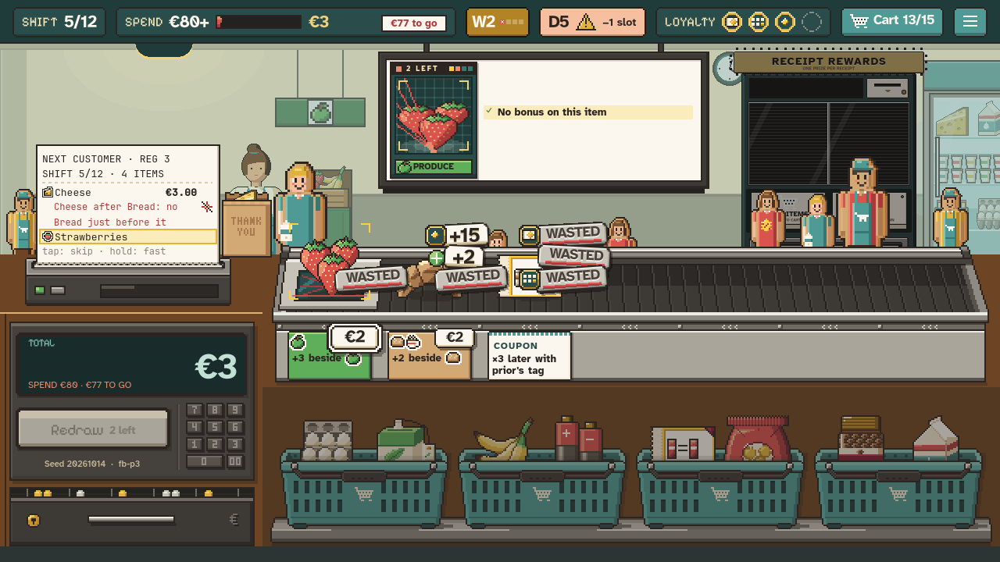

<title>Cheering In Game</title>
<meta name="claude:viewport-fit-sides" content="cover">
<link rel="stylesheet" href="https://fonts.googleapis.com/css2?family=Pixelify+Sans:wght@600&family=Atkinson+Hyperlegible:wght@400;700&display=swap">
<style>
  /* One column: the capture first, then the notes, on the game's night-shift teal. */
  :root {
    --bg: #1f3a3d; --panel: #26474a; --fg: #f4ecd8; --muted: #b9c9c4; --accent: #e8b84a; --line: #3c6266;
    --display: "Pixelify Sans", "Courier New", monospace;
    --body: "Atkinson Hyperlegible", system-ui, sans-serif;
    color-scheme: dark;
  }
  body { background: var(--bg); color: var(--fg); font-family: var(--body); font-size: 16px; line-height: 1.5; }
  main { max-width: 1280px; margin: 0 auto; padding-block: 24px 48px;
    padding-left: max(16px, env(safe-area-inset-left, 0px)); padding-right: max(16px, env(safe-area-inset-right, 0px));
    display: grid; gap: 20px; }
  h1 { font-family: var(--display); font-weight: 600; font-size: 2rem; margin: 0; color: var(--accent); text-wrap: balance; }
  .sub { color: var(--muted); margin: 0; }
  figure { margin: 0; display: grid; gap: 8px; }
  .frame { overflow-x: auto; border: 2px solid var(--line); background: #000; }
  .frame img { display: block; width: 100%; max-width: 100%; image-rendering: pixelated; }
  figcaption { color: var(--muted); font-size: 0.875rem; }
  section { background: var(--panel); border: 2px solid var(--line); padding: 16px; display: grid; gap: 8px; }
  h2 { font-family: var(--display); font-weight: 600; font-size: 1.25rem; margin: 0; letter-spacing: 0.03em; }
  ul { margin: 0; padding-left: 1.2em; display: grid; gap: 6px; max-width: 70ch; }
</style>
<main>
  <h1>Checkout cheering in game</h1>
  <p class="sub">#120 · v0.76 · captured mid-count from the real shift screen at 1280×720</p>
  <figure>
    <div class="frame"></div>
    <figcaption>Eight standees after five payouts (sizes small, huge, big, small, small). Pinch to zoom.</figcaption>
  </figure>
  <section>
    <h2>How it plays</h2>
    <ul>
      <li>Every paying item pops standees: 1 small, 2 for a big payout, 3 for a huge one. A combo item counts one size up.</li>
      <li>Big standees are 3× instead of 2×, and bigger payouts hop higher, climbing with the xylophone notes.</li>
      <li>They stand anywhere behind the conveyor and never over the monitor; open wall is preferred over spots hidden behind the receipt or bag.</li>
      <li>A WASTED item removes the newest standee. At the quota ding everyone hops; a missed quota sinks the crowd.</li>
      <li>They fold away after the verdict, before the camera glides to the reward machine. Up to 40 standees per checkout.</li>
      <li>Sound: the game's cardboard place and return sounds, pitched up per standee. No "yay" yet.</li>
    </ul>
  </section>
  <section>
    <h2>To judge when you play</h2>
    <ul>
      <li>Standees can stand in front of the cashier. Keep that, or keep her clear?</li>
      <li>Under the monitor, standees mostly show as heads behind the row's stickers.</li>
      <li>Sizes, counts and hop heights are first guesses and live in the balance data, easy to tune.</li>
    </ul>
  </section>
</main>
